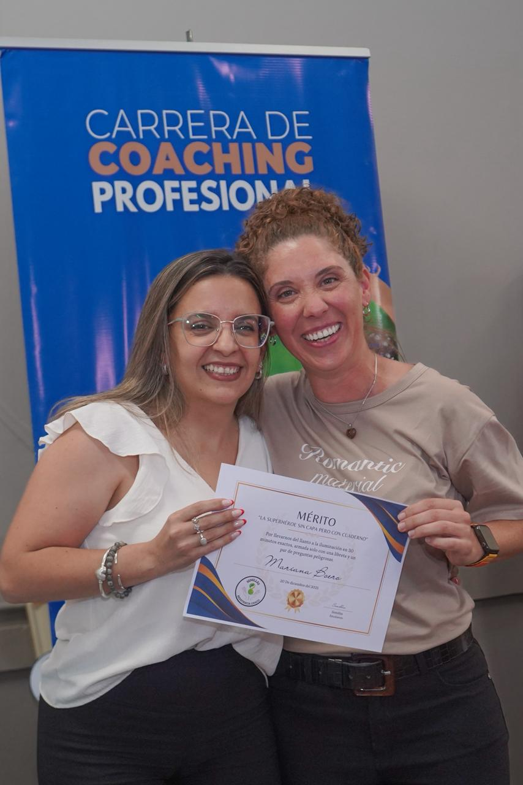
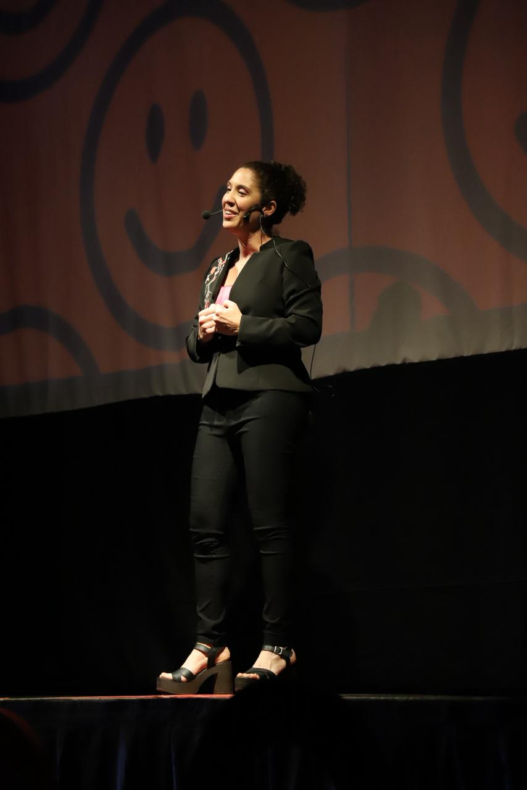

Programas formativos
Procesos formativos estructurados en etapas que permiten un desarrollo sostenido y profundo.
- Trabajo progresivo por módulos
- Seguimiento y evaluación
- Aplicación práctica continua

Espacios de aprendizaje de liderazgo integral.
Conoce nuestras formacionesNuestras formaciones y capacitaciones son espacios de aprendizaje y transformación. No se trata solo de incorporar contenido... se trata de integrar herramientas que generen cambios reales en tu forma de pensar, sentir y actuar. Abordamos distintas temáticas —coaching, liderazgo, deporte, autoconocimiento, ventas, eneagrama— con un enfoque práctico, profundo y aplicable.
Según la formación que elijas, podés desarrollar:
A lo largo de las formaciones vas a:
Porque aprender no es acumular información... es transformarte en alguien capaz de hacer algo distinto con eso que sabe.

Participamos en procesos formativos dentro de ECOA, contribuyendo al desarrollo de nuevas generaciones de profesionales.

Espacios dinámicos diseñados para abordar temáticas específicas con herramientas aplicables de manera inmediata.
Procesos formativos estructurados en etapas que permiten un desarrollo sostenido y profundo.
Explorá ideas, herramientas y reflexiones aplicadas al desarrollo personal y profesional.
Participamos activamente en procesos formativos dentro de ECOA.
Integramos encuentros virtuales y presenciales para un aprendizaje profundo y aplicado.
Directoras
Clases virtuales y encuentros presenciales
Resistencia y Saenz Peña
Ontológico
Somos parte de ECOA, una de las instituciones de coaching ontológico con mayor crecimiento en Latinoamérica. La formación cuenta con más de 800 horas de entrenamiento y está avalada por AACOP, garantizando un proceso profesional y riguroso.
Formar parte de ECOA es integrar una experiencia que transforma tu forma de ver, pensar y actuar, brindándote herramientas concretas para desarrollarte con mayor claridad, criterio y dirección profesional.
“El proceso me permitió cambiar mi forma de ver y accionar en lo profesional.”
Alumno ECOA“No solo aprendí herramientas, transformé mi manera de relacionarme.”
Alumno ECOAEspacios dinámicos diseñados para abordar temáticas específicas con herramientas aplicables de manera inmediata.
Cada encuentro está diseñado con una metodología participativa y aplicada.
Online
4 meses
Equipos y profesionales
Práctico y aplicado
Diseñamos procesos estructurados en etapas que permiten un desarrollo profundo, sostenido y aplicado en contextos reales.
Programa orientado al alto rendimiento, enfocado en el desarrollo mental y emocional de deportistas y equipos competitivos.
Formación enfocada en comprender y acompañar al deportista desde una mirada integral, abordando su dimensión mental, emocional y corporal para mejorar su rendimiento y bienestar.
También incluye instancias de especialización como Zona Flow para Coaches, orientadas a profundizar la práctica profesional con acompañamiento supervisado.

Programa diseñado para desarrollar herramientas de regulación emocional, comunicación consciente y toma de decisiones alineadas.
“El proceso me permitió ordenar mis ideas y tomar decisiones con mayor claridad.”
Participante“Aplicamos herramientas concretas que generaron cambios reales en nuestro equipo.”
Equipo de trabajo“El proceso me permitió ordenar mis ideas y tomar decisiones con mayor claridad.”
Participante“El proceso me permitió ordenar mis ideas y tomar decisiones con mayor claridad.”
ParticipanteContactanos para recibir más información.
Solicitar información